以下是维基百科对Shadowsocks的描述：
Shadowsocks is a free and open-source encrypted proxy project, widely used inmainland China to circumvent Internet censorship. It was created in 2012 by a Chinese programmer named "clowwindy", and multiple implementations of the protocol have been made available since. Typically, the client software will open a socks5 proxy on the machine it is run, which internet traffic can then be directed towards, similarly to an SSH tunnel. Unlike an SSH tunnel, shadowsocks can also proxy UDP traffic.
本文内容为软件的部署与操作，分为服务端与客户端两部分。
1 服务端
本部分介绍在Ubuntu上的步骤，其他操作系统可以此为参考。
本步骤中，您需要：
-
一台不受GFW影响的主机（可以到各大VPS厂商购买）
-
命令行基础
1.1 安装python3和pip
执行Bash命令：
sudo apt update
sudo apt install python3 python3-pip
1.2 安装shadowsocks
shadowsocks服务端的Python实现托管于shadowsocks/shadowsocks
使用pip安装shadowsocks服务端，执行Bash命令：
sudo pip3 install git+https://github.com/shadowsocks/shadowsocks.git@master
1.3 配置文件
在您的home目录里，新建ss目录，将shadowsocks的配置文件和日志文件放置在其中；执行Bash命令：
mkdir ~/ss
cd ss
使用你喜欢的文本编辑器，创建配置文件config.json，此处实例使用nano；执行Bash命令：
nano config.json
粘贴如下内容，并根据您的喜好设置：
{
"server_port":8388,
"password":"your_password",
"method":"aes-256-cfb"
}
字段说明：
| 名称 | 说明 |
|---|---|
| server_port | 服务端监听的端口 |
| password | 密码 |
| method | 加密方法，请查看Encryption |
更多说明请查看wiki
1.5 运行
在后台运行shadowsocks，并将日志写入文件~/ss/log，执行Bash命令：
ssserver -c ~/ss/config.json --log-file ~/ss/log --pid-file ~/ss/pid -d start
Bash会话记录如下：

1.4 防火墙开放shadowsocks端口
在1.3 配置文件中的示例配置文件中，我们设置了shadowsocks监听8388端口，如果您的主机开启了防火墙，则我们需要开放这个端口；此处假设防火墙软件为ufw，执行Bash：
sudo ufw allow 8388
2 客户端
本部分依次介绍在Android / macOS / Manjaro Linux 操作系统上的shadowsocks客户端使用。
2.1 Android
shadowsocks的Android客户端托管于shadowsocks/shadowsocks-android
首先，在Releases页面下载您的CPU架构对应的安装包，截图如下：
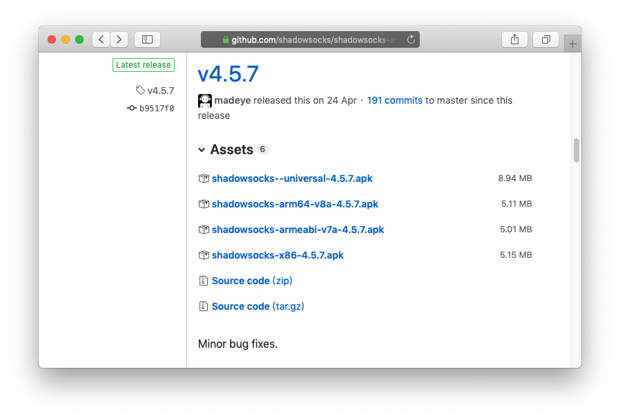
关于Android的CPU架构，摘自What is armeabi and why they use it?的一个回答： Android设备有CPU。 其中许多CPU基于ARM架构，有些基于x86，还有一些基于MIPS等其他东西。 一些Android应用程序使用Native Development Kit（NDK）创建C / C++代码以链接到他们的应用程序。 需要针对特定的CPU架构编译C / C++代码。 NDK将为每个体系结构编译的C / C++代码版本放入特定于体系结构的目录中。 其中一个目录是armeabi /，它用于通用ARM CPU。 还有armeabi-v7 /（对于ARM v7兼容的CPU），x86 /（对于x86 CPU）等。（来自谷歌翻译）
下载并安装后，打开程序，默认页面为配置文件，截图如下：
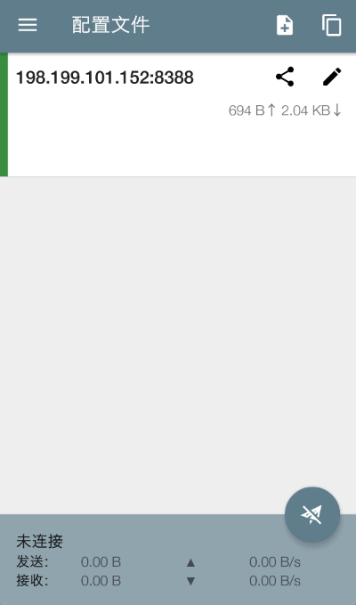
我们假定您的主机IP地址为
6.6.6.6
点击下方截图中红框所示的铅笔按钮：
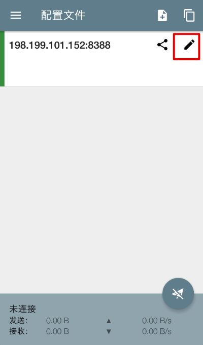
根据1.3 配置文件中的示例配置文件，修改服务器配置中的项，截图如下，红框所示：
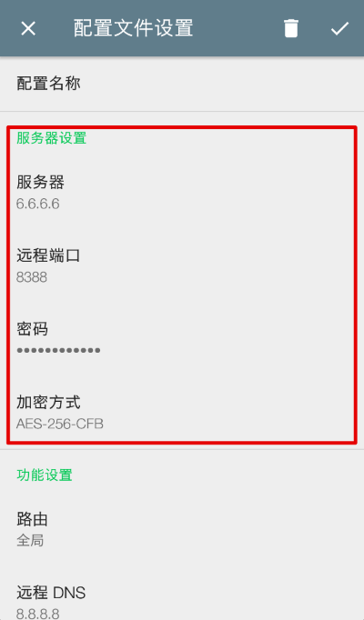
继续修改功能设置，路由设置为GFW列表（在您理解其他选项时，可以选择其他选项），其余选项保持默认，截图如下：
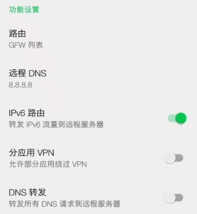
其余选项保持默认，点击右上角的勾按钮，保存修改，截图如下：

点击右下角的小飞机，以连接服务器，首次会弹出截图所示对话框；
请打开您的浏览器，访问https://google.com以测试是否能科学上网，若您的操作正确，则可以访问。
2.2 macOS
shadowsocks的macOS端托管于shadowsocks/ShadowsocksX-NG
首先，到Releases页面下载程序，页面截图如下：
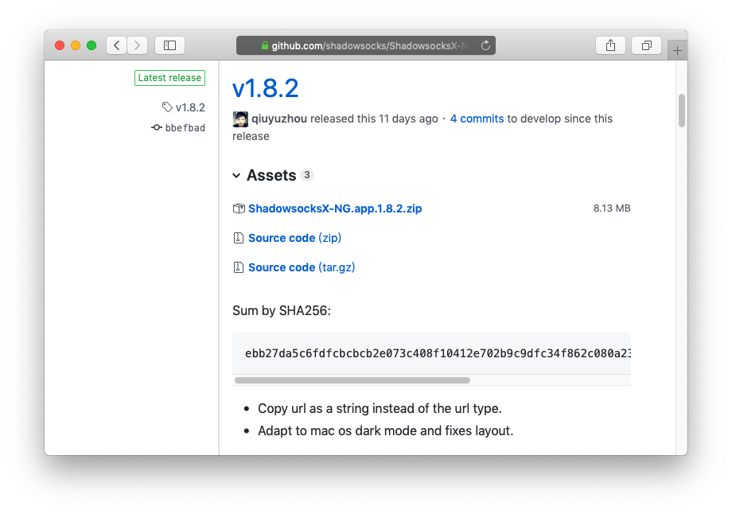
下载完成后，由页面上的sha256和，校验下载的文件是否相同；若不是，请尝试重新下载；若是，拖拽至应用程序中，双击运行，会在菜单栏中显示灰色的小飞机，截图如下：
单击小飞机，现实菜单，截图如下：
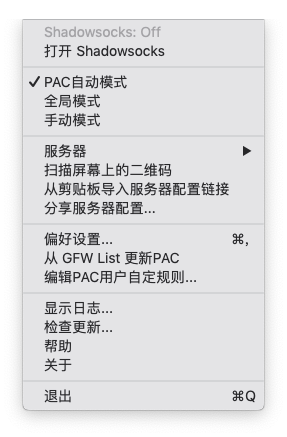
点击服务器>服务器设置>+，按照您的服务器配置情况填写数据项，点击确定，再次进入服务器设置，截图如下：
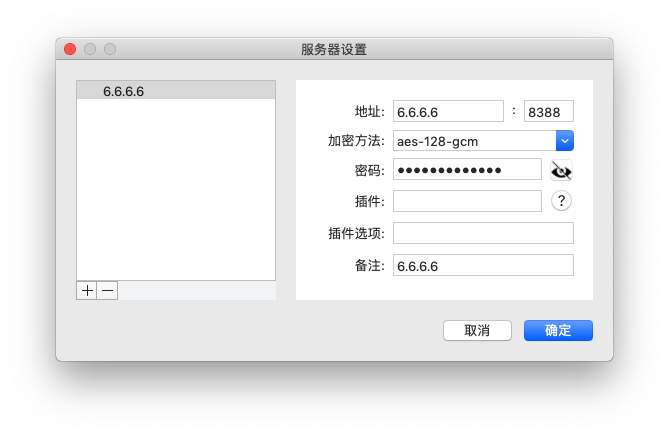
您可能已经观察到，Shadowsocks默认选择了PAC自动模式，若您刚接触此软件，请保留此设置，截图如下：
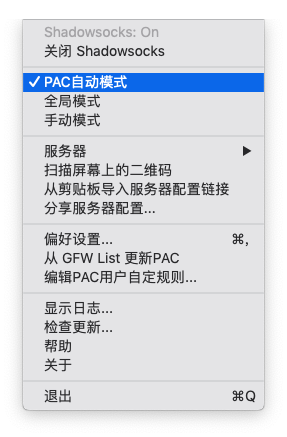
点击菜单栏的小飞机>打开 Shadowsocks，小飞机由灰色变为黑色，截图如下：
请打开您的浏览器，访问https://google.com以测试是否能科学上网，若您的操作正确，则可以访问。
2.3 Manjaro Linux
分为
Shadowsocks客户端和浏览器插件两部分
2.3.1 Shadowsocks客户端
shadowsocks/shadowsocks-qt5是一个跨平台的客户端。
在Linux操作系统上，我们通过包管理器安装shadowsocks-qt5，打开终端，执行Bash命令：
sudo pacman -Syy
sudo pacman -S shadowsocks-qt5
安装完成后，打开shadowsocks-qt5，截图如下：
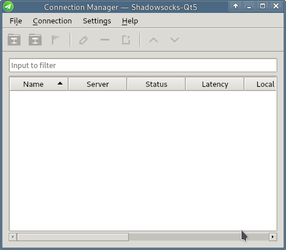
点击菜单Connection>Add>Manually，截图如下：
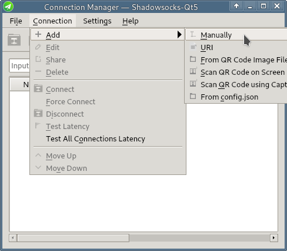
按照您的服务器配置情况填写数据项，截图如下：
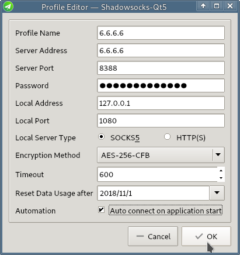
点击OK，选中刚刚创建的服务器项，点击菜单Connection>Connect，若您的操作正确，则服务器项的Status为Connected。
2.3.2 浏览器插件
FelisCatus/SwitchyOmega项目提供了
Chrome(或者Chromium)和Firefox的代理插件，本部分演示在Chrome浏览器的操作。
首先，到Releases下载SwitchyOmega_Chromium.crx安装包；在Chrome地址栏输入chrome://extensions/并回车，进入拓展程序界面，点击右上角的开发者模式，将下载好的SwitchyOmega_Chromium.crx文件拖拽到此界面，安装；
安装完成后，自动打开设置界面，您可以跟随教程学习；完成后，点击PROFILES>proxy，根据2.3.1 Shadowsocks客户端的配置来设置Proxy servers，Protocol选择SOCKS5，Server设置127.0.0.1，Port设置1080，点击ACTIONS>Apply changes，以保存设置，截图如下：
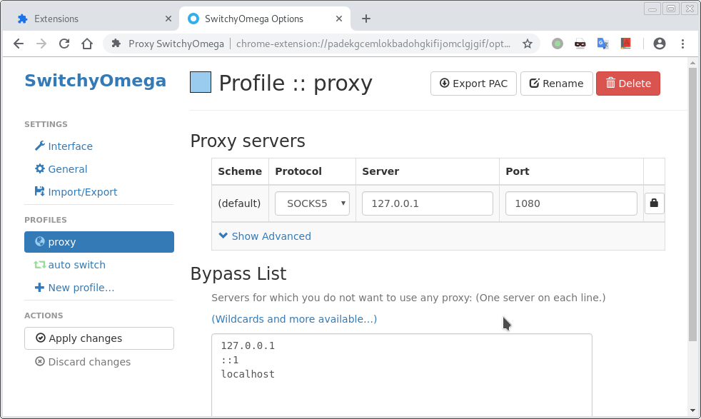
点击地址栏右边的小黑圈，选择proxy，访问https://google.com，若您的操作正确，则可以访问；
proxy模式下，所有流量都通过代理服务器，您可以使用auto switch模式，自动添加代理规则；更多信息请查看wiki